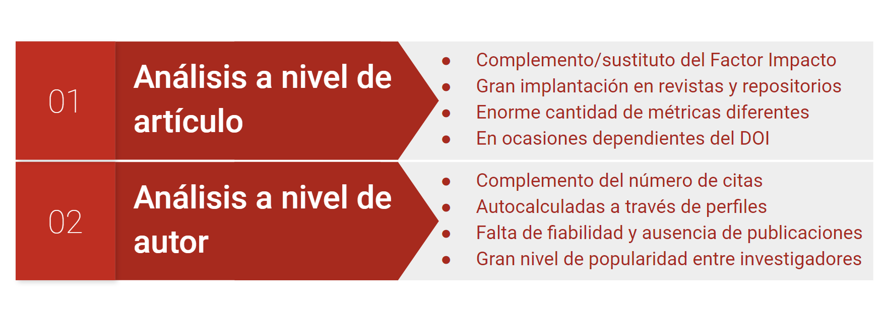
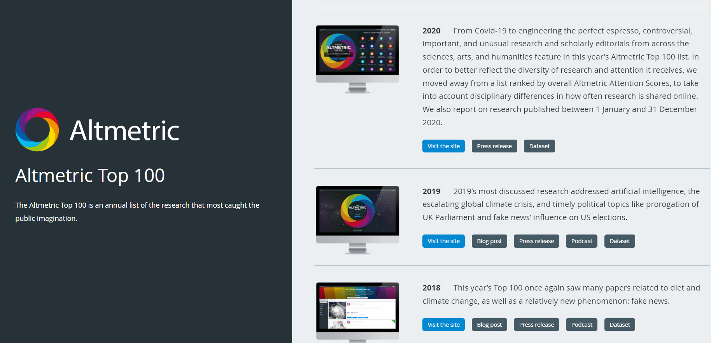
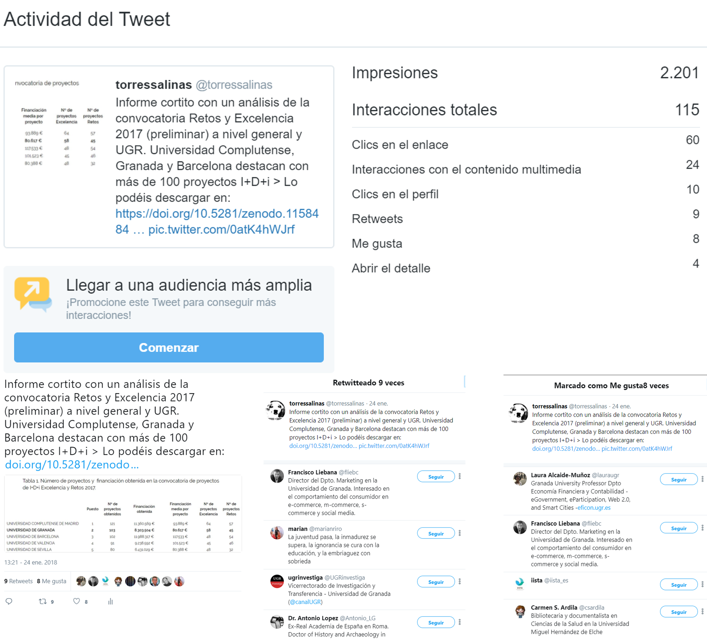
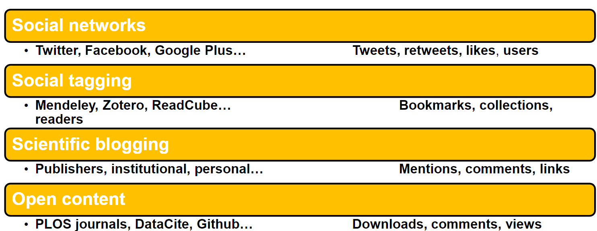
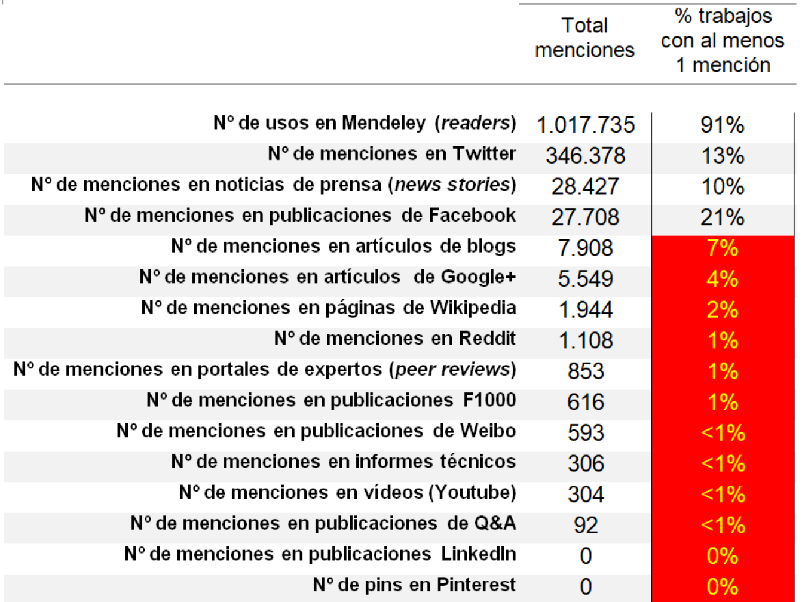

Sesión 2 Herramientas y fuentes altmétricas
En esta sesión vamos analizar desde el punto de vista técnico y metodológico cómo funcionan las altmétricas, cómo se identifican las menciones, el procesamiento de datos, las diferentes fuentes desde las que podemos extraer estos datos y cómo podemos plantear un estudio científico a partir de estos indicadores.
2.1 Tipos de análisis
Si seguimos el esquema clásico de la bibliometría, existen tres tipos de análisis según el nivel de agregación que empleemos de la unidad de análisis:
Nivel macro. Referido a estudios que analizan un gran volumen de datos de manera agregada. Estos análisis bibliométricos pueden ofrecer resultados de manera robusta estadísticamente hablando. Ejemplos: análisis de países o de grandes áreas científicas.
Nivel meso. Tiene que ver con análisis de unidades de agregación intermedias, donde los estudios aún muestran resultados bastante robustos y permiten entrar en mayor detalle para explicar los mecanismos detrás de un fenómeno. Ejemplos: análisis de universidades, departamentos, disciplinas.
Nivel micro. Donde el objeto de estudio es el individuo o el paper. Requieren una gran contextualización y suelen tener un carácter descriptivo o exploratorio.
Los indicadores altmétricos se introdujeron con la promesa de facilitar los análisis micro, con muchos autores referiéndose a los mismos como Article-level metrics (Neylon and Wu 2009) o Author-level metrics (orduna-maleaBibliometriaQueViene2016?; torres-salinasPresenciaRedesSociales2014?).

Algunos ejemplos en diferentes niveles:
- Altmétricas a nivel revista - PLOS One
- Altmétricas a nivel de autor - ImpactStory - UGR Investiga
- Integración en revistas Research Evaluation
- Integración en repositorios bioRxiv
Del mismo modo podemos ver en mayor detalle la información que ofrece Altmetric.com, uno de los principales agregadores altmétricos como veremos más adelante. Esta herramienta ha estado publicando hasta 2020 un listado con los top 100 trabajos con más altmétricas.

2.2 Fuentes primarias
Aunque cada vez es menos habitual, gracias a la gran expansión que han tenido los agregadores altmétricos, siempre es posible sacar indicadores de las diferentes fuentes sociales de manera dirigida y específica. Asimismo hay indicadores específicos de cada fuente que muchas veces no se pueden extraer directamente de estos agregadores.

Cuestiones importantes a recordar:
- Cada plataforma nos puede ofrecer más de un indicador
- Hay que distinguir entre generalistas y académicas
- Los datos altmétricos se recogen ítem a ítem
- Requieren procesamiento y normalización, coste en tiempo
- Se gana en precisión en los indicadores
- Posibilidad de calcular métricas avanzadas (ARS)

A pesar de las grandes oportunidades que en teoría nos ofrecen las altmétricas en cuanto a cantidad y diversidad de indicadores, lo cierto es que en muchos casos pueden resultar inútiles, ya que muchas de ellas apenas son capaces de capturar actividad académica. En esta tabla podemos observar cómo son pocas fuentes las que aglutinan el mayor número de menciones:

2.3 Redes académicas
Don’t miss Table 2.1.
knitr::kable(
head(pressure, 10), caption = 'Here is a nice table!',
booktabs = TRUE
)| temperature | pressure |
|---|---|
| 0 | 0.0002 |
| 20 | 0.0012 |
| 40 | 0.0060 |
| 60 | 0.0300 |
| 80 | 0.0900 |
| 100 | 0.2700 |
| 120 | 0.7500 |
| 140 | 1.8500 |
| 160 | 4.2000 |
| 180 | 8.8000 |